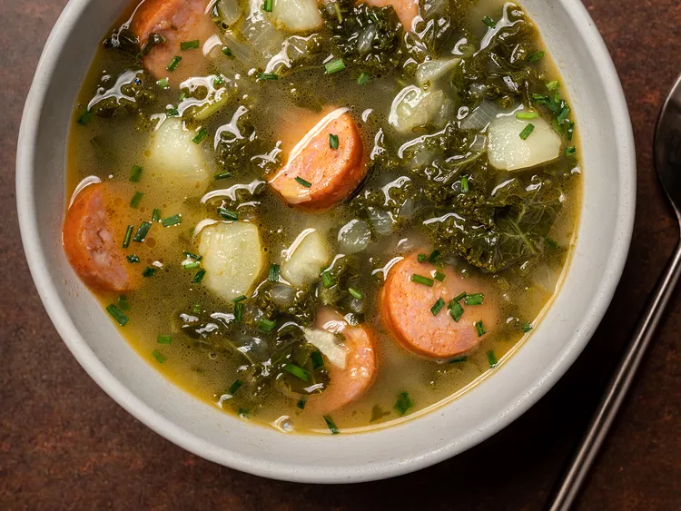

Caldo Verde

Description
Caldo verde, also known as green soup, is a traditional Portuguese soup made with potatoes,
chorizo sausage, and thinly sliced collard greens or kale. It can be made spicy to preference and always
seems to hit the spot.
- kale or collard greens
- potatoes
- chorizo
- olive oil
- Spanish onion
- garlic cloves
- chicken stock
- fresh-ground black or white pepper
Instructions
- Warm the oil in a large pot of water over medium heat. Add chorizo and brown.
- Remove sausage to a plate.
- Add onions, salt, and garlic.
- Add potatoes and chicken stock, and simmer for 10 to 20 minutes, until potatoes are tender.
- Add kale, bring soup back to a boil, then reduce to a simmer for a few minutes.
- Season with salt and pepper, or other spices.
- Serve, adding the chorizo back in.